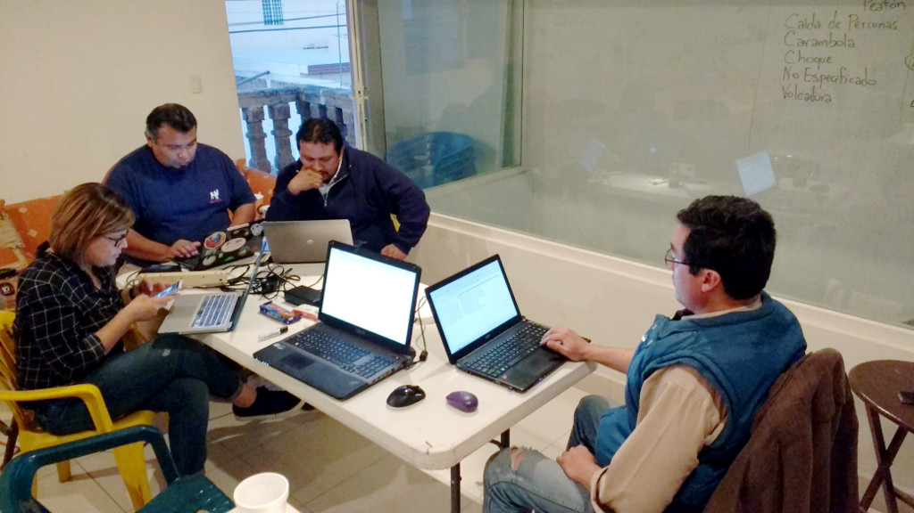
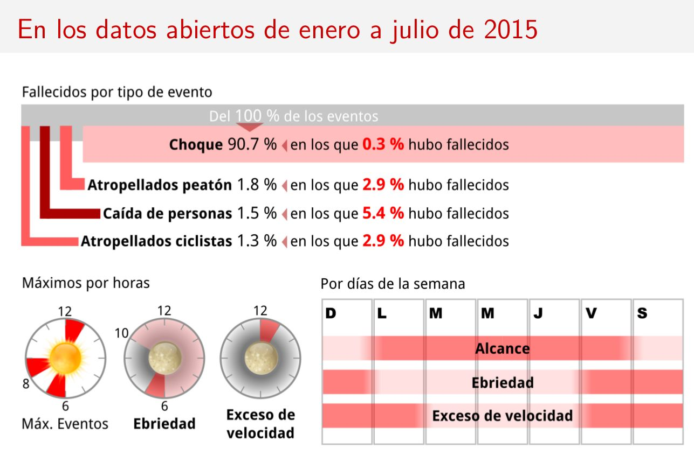

Red México Abierto
Red México abierto es la iniciativa del Gobierno Federal cuya meta es la incorporación de las entidades e instituciones de todos los niveles de gobierno en un gran número políticas y prácticas que se engloban con el concepto de gobierno abierto.
El gobierno en todo su conjunto ha sido y será el principal generador de datos; sin ser obligadamente el que más datos tiene. Uno de sus principales objetivos del gobierno es el otorgar servicios públicos de calidad, en tiempo y a todas las personas; algo que ha hecho en su historia al recolectar, administrar y difundir información, siempre en aras de que sus labores sean más eficientes.
En la teoría se ve bien, en la práctica queda evidente tanto el retraso en el uso de nuevas tecnologías como la modernización de sus políticas y reglamentos que incentiven su incorporación. Es ahí donde Red México Abierto opera como catalizador para capacitar, documentar y difundir prácticas de gobierno abierto.
Modernización en Tránsito y Vialidad Torreón
De manera autónoma, durante el año pasado, la Dirección de Tránsito y Vialidad del Municipio de Torreón modernizó la forma de llevar su registro de eventos sobre seguridad vial al cambiar del formato físico al digital. Concretamente al pasar del papel a hojas de cálculo en equipos de cómputo lograron capturar mejor y reducir el tiempo para elaborar un reporte.
No hay que menospreciar este cambio de actitud. Ya que más que un simple cambio de herramientas, representa la actitud hacer las cosas mejor, que quisiéramos notar en todas las instituciones.
Tiempo después, colaboraron con el IMPLAN Torreón, la Dirección General de Desarrollo Institucional y la Dirección de Informática para ejecutar los procedimientos recomendados por Red México Abierto y lograr la primer liberación de datos abiertos sobre seguridad vial.
Características deseables de los datos abiertos
Los datos sobre seguridad vial se apegaron a las recomendaciones de la Guía para cumplir con el Decreto de Datos Abiertos; entre todas éstas, destacan las que se refieren a que se publiquen en formatos que sean estándares abiertos, legibles por las máquinas y desagregados.
- ¿A qué se refiere con estándares abiertos? A que el tipo de archivo cumpla con tener una especificación pública; como el texto TXT, texto separado por comas CSV y otros tipos como XML, HTML, JSON que tienen sus especificaciones públicas y documentadas. En contraparte un tipo de archivo cerrado es aquel en el que desconocemos cómo están los datos, sólo lo conoce la empresa o el desarrollador que creo el software; por ejemplo un DOC o un XLS destinados a usarse con Microsoft Office.
- ¿Qué significa que sean legibles por las máquinas? Los consumidores de los datos abiertos no sólo son los seres humanos; también las máquinas, es decir, programas o sistemas autónomos pueden bajar los datos abiertos y entregar buenos productos como aplicaciones y reportes. Cuando la información es en archivos de procesador de texto DOCX, hojas de cálculo XLSX suelen tener logotipos, encabezados y números de página que entorpecen la automatización.
- ¿Qué es la desagregación? Poco sirve que un archivo publicado como dato abierto nos de uno o varios totales. En sí los reportes o sumarizaciones abonan poco a la investigación y análisis. Por ejemplo, si se informa que en el mes de mayo se sembraron la cantidad de 62 árboles quedamos sólo hasta ahí, en la cantidad total. En cambio, para que esta información sea desagregada, deberá ser un listado con 62 renglones y varias columnas como la fecha de siembra, la especie de árbol, el responsable que la plantó, las coordenadas geográficas de su ubicación, etc.

Se realizó el primer hackatón
De nada sirven los datos abiertos si sólo se publican; es necesario que los ciudadanos los usen y entreguen a la misma sociedad y a la institución que los generó un resultado constructivo.
El pasado mes de febrero de 2016 integrantes del Grupo de Usuarios de GNU/Linux de La Laguna (GULAG) e invitados realizaron un hackatón, evento comunitario donde aprendimos a bajar los datos sobre seguridad vial, analizarlos en hojas de cálculo y encontrar diversos patrones y hechos que pueden guiar a la sociedad y a la institución basándonos en información fiel.
Un hackatón también es una gran oportunidad para que servidores públicos no sólo compartan su información con los ciudadanos, también para trabajar codo con codo, compartir conocimientos e incrementar la confianza mutua platicando, trabajando y conviviendo en la misma mesa.
Los hallazgos que puede ver en la infografía fueron encontrados por personas como Usted. Dan evidencia de la vulnerabilidad en peatones, ciclistas y quienes caen de vehículos. También se encontraron las cantidades máximas por tipo de evento, tanto por hora como por día de la semana.

Continuidad de este proyecto
La comunidad del GULAG espera que la Dirección de Tránsito y Vialidad no deje de publicar los datos abiertos en materia de seguridad vial. Al seguir siendo éstos en estándares abiertos, legibles por las máquinas y desagregados, el GULAG podrá elaborar un programa que automatice la generación de la infografía.
Al generarse periódicamente la infografía a partir de los datos abiertos, Tránsito y Vialidad se beneficiará al orientar sus acciones en reducir estos incidentes; también la comunidad lagunera estará al pendiente de estas estadísticas mejoren y tomará más conciencia de la cultura vial que carecemos.